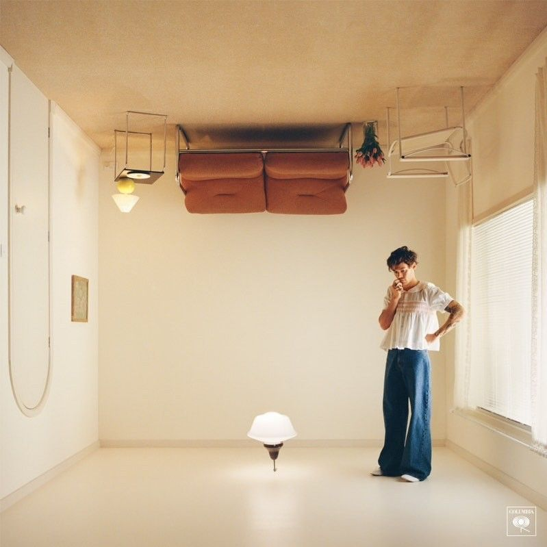

Harry Edward Styles es un cantante, compositor y actor británico, nacido el 1 de Febrero de 1994 (29 años).En 2010 participo en el programa The X Factor e inicio su carrera como integrante de una boyband muy conocida llamada One Direction, en esta banda conoció a sus compañeros y amigos (Louis Tomlinson, Niall Horan, Zayn Malik Y Liam Payne) con los que trabajaría hasta 2015 y sacarían un total de 5 álbumes ( Up All Night , Take Me Home, Midnight Memories, Four), estos últimos dos álbumes solo se conforman por 4 integrantes ya que Zayn decidió salirse de la banda y al finalizar este último álbum los demás integrantes decidieron tomar un descaso indefinido.
Harry inicia su carrera como solista en 2017 sacando un álbum llamado “Harry Styles” en el cual tuvo un sencillo muy exitoso llamado “Sign of the times” que llegó al puesto número 1 en el Reino Unido y al 4 en los Estados Unidos. Este álbum esta conformado por 10 canciones.
En 2019 saco su segundo álbum llamado Fine line alcanzó la primera posición en varios países con récords en ventas. Del álbum fueron lanzados como sencillos los temas Lights Up y Adore You, que ingresaron al top 10 en el Reino Unido. Asimismo, fue lanzado como sencillo Watermelon Sugar, que se convirtió en su primera canción en alcanzar el número 1 del Billboard Hot 100 de los Estados Unidos y le valió el Grammy a la mejor interpretación de solista pop, así como su segundo premio Brit; Con este álbum Harry hizo un tour mundial llamado “Love on tour” que duro 2 años. Este álbum esta conformado por 12 canciones.
Harry’s house es el tercer álbum que fue lanzado en Mayo del 2022, se lanzaron tres sencillos de Harry's House. El primer sencillo, As It Was, tuvo un gran desempeño comercial, llegando al número uno en 35 países, el segundo sencillo, Late Night Talking, alcanzó el top 5 en Australia, Canadá, Estados Unidos, Irlanda, Islandia, Lituania, Nueva Zelanda, Portugal, Reino Unido y Singapur. El tercer sencillo, Music for a Sushi Restaurant, alcanzó el top 10 en Australia, Canadá, Estados Unidos, Irlanda, Nueva Zelanda, Portugal y Reino Unido.Este álbum esta conformado por 13 canciones.
Cuando Harry seguía en 1D se hizo una película junto con sus compañeros de banda llamada “This is Us” mostrando como era cuando salían de gira y su día a día, sin embargo la carrera de Harry como actor ha seguido ya que en 2017 actuó en la película “Dunkerque” , en 2021 aparecio en una pequeña escena de Marvel en la película “The eternals” y finalmente en 2022 protagonizo 2 películas “My policeman y Don’t worry darling” siendo estas ultimas 2 las peliculas que mas lo han marcado en su carrera de actor ya que han sido los proyectos mas grandes en los que ha trabajado en este ámbito.
Harry Edward Styles
One Direction